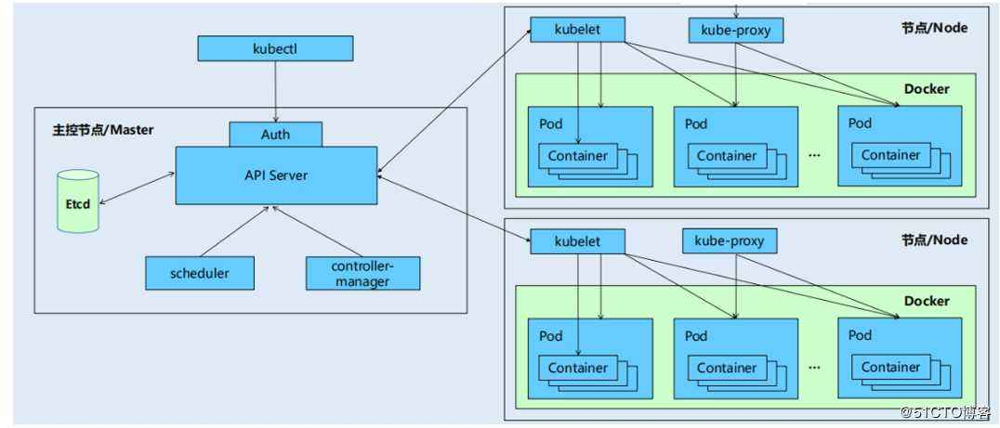

介绍

API Server
提供HTTP/HTTPS RESTful API,是Cluster前端接口，各种客户端工具以及Kubernetes其他组件可以通过它管理Cluster的各种资源。 它提供了对集群各种资源访问和控制的REST API,管理员可以通过kubectl或者第三方客户端生成HTTP请求，发送给API Server。或者是集群内部的服务通过API Server对集群进行控制操作（比如dashborad）。 集群内部的各种资源，如Pod、Node会定期给API Server发送自身的状态数据。而Master中的Controller Manager和Scheduler也是通过API Server与etcd进行交互，将系统的状态存入etcd数据库或者从etcd中读出系统状态。
Scheduler
Scheduler负责决定将Pod放在哪个Node上。会对各个节点的负载、性能、数据考虑最优的Node。
Controller Manager
负责管理Cluster资源，保证资源处于预期状态。Controller Manager由多种controller组成：replication controller、endpoints controller、namespace controller、service accounts controller等。 不同的controller管理不同的资源。Controller Manager作为集群内部管理控制中心，负责集群内的Node、Pod副本、EndPoint、命名空间、服务账号、资源定额等管理。当某个Node意外宕机了，Controller Manager会及时发现此故障并执行自动修复流程，确保集群始终处于预期的工作状态。
etcd
etcd保存Cluster配置信息和各种资源的状态信息。当数据发生变化时，etcd会快速通知Kubernetes相关组件。
Pod网络
Pod要能够相互通信，Cluster必须部署Pod网络，flannel是其中之一。
Node节点
Node运行组件有：kubelet、kube-proxy、Pod网络（flannel）
kubelet
kubelet是Node的agent，Scheduler会将Pod配置信息发送给该节点的kubelet，kubelet根据这些信息创建和运行容器，并向Master报告运行状态。
kube-proxy
每个Node运行kube-proxy服务，负责将访问service的TCP/UDP数据流转发到后端的容器。如果有多个副本会实现负载均衡。
安装
一共3个节点，
10.10.252.215 master
10.10.252.214 node1
10.10.252.213 node2
除了初始化，软件安装一致
k8s repo
[k8s]
name=k8s
enabled=1
gpgcheck=0
baseurl=https://mirrors.aliyun.com/kubernetes/yum/repos/kubernetes-el7-x86_64/
base.repo
[base]
name=CentOS-$releasever - Base
#mirrorlist=http://mirrorlist.centos.org/?release=$releasever&arch=$basearch&repo=os&infra=$infra
baseurl=https://mirrors.ustc.edu.cn/centos/$releasever/os/$basearch/
gpgcheck=1
gpgkey=file:///etc/pki/rpm-gpg/RPM-GPG-KEY-CentOS-7
#released updates
[updates]
name=CentOS-$releasever - Updates
#mirrorlist=http://mirrorlist.centos.org/?release=$releasever&arch=$basearch&repo=updates&infra=$infra
baseurl=https://mirrors.ustc.edu.cn/centos/$releasever/updates/$basearch/
gpgcheck=1
gpgkey=file:///etc/pki/rpm-gpg/RPM-GPG-KEY-CentOS-7
#additional packages that may be useful
[extras]
name=CentOS-$releasever - Extras
#mirrorlist=http://mirrorlist.centos.org/?release=$releasever&arch=$basearch&repo=extras&infra=$infra
baseurl=https://mirrors.ustc.edu.cn/centos/$releasever/extras/$basearch/
gpgcheck=1
gpgkey=file:///etc/pki/rpm-gpg/RPM-GPG-KEY-CentOS-7
#additional packages that extend functionality of existing packages
[centosplus]
name=CentOS-$releasever - Plus
#mirrorlist=http://mirrorlist.centos.org/?release=$releasever&arch=$basearch&repo=centosplus&infra=$infra
baseurl=https://mirrors.ustc.edu.cn/centos/$releasever/centosplus/$basearch/
gpgcheck=1
enabled=0
gpgkey=file:///etc/pki/rpm-gpg/RPM-GPG-KEY-CentOS-7
cd /etc/yum.repos.d/
wget http://mirrors.aliyun.com/docker-ce/linux/centos/docker-ce.repo
vim k8s.repo
yum makecache
yum install docker-ce kubelet kubeadm kubectl -y
cat /etc/docker/daemon.json
{
"exec-opts": ["native.cgroupdriver=systemd"],
"registry-mirrors": ["https://docker.mirrors.ustc.edu.cn"]
}
cat > /etc/sysctl.d/k8s.conf << EOF
net.bridge.bridge-nf-call-ip6tables = 1
net.bridge.bridge-nf-call-iptables = 1
EOF
echo "1" >/proc/sys/net/bridge/bridge-nf-call-iptables
setenforce 0
swapoff -a
systemctl restart docker && systemctl enable docker
systemctl restart kubelet && systemctl enable kubelet
master node1 node2 上面内容一致
master执行
kubeadm init --kubernetes-version=1.19.0 --apiserver-advertise-address=10.10.252.215 --image-repository registry.aliyuncs.com/google_containers --service-cidr=10.10.0.0/16 --pod-network-cidr=10.244.0.0/16
mkdir -p $HOME/.kube
sudo cp -i /etc/kubernetes/admin.conf $HOME/.kube/config
sudo chown $(id -u):$(id -g) $HOME/.kube/config
kubectl apply -f https://docs.projectcalico.org/manifests/calico.yaml
node1 node2 执行
kubeadm join 10.10.252.215:6443 --token u3toqk.8j7fnn0lmajgvnvq --discovery-token-ca-cert-hash sha256:49b37a021f9223d2f3af10d71a5ca47cc34e12d2c20147adfc61a6a4b90c4b97
master 生成join语句脚本备用
#!/bin/bash
if [ $EUID -ne 0 ];then
echo "You must be root (or sudo) to run this script"
exit 1
fi
if [ $# != 1 ] ; then
echo "Usage: $0 [master-hostname | master-ip-address]"
echo " e.g.: $0 api.k8s.hiko.im"
exit 1;
fi
token=`kubeadm token create`
cert_hash=`openssl x509 -pubkey -in /etc/kubernetes/pki/ca.crt | openssl rsa -pubin -outform der 2>/dev/null | openssl dgst -sha256 -hex | sed 's/^.* //'`
echo "Refer the following command to join kubernetes cluster:"
echo "kubeadm join $1:6443 --token ${token} --discovery-token-ca-cert-hash sha256:${cert_hash}"